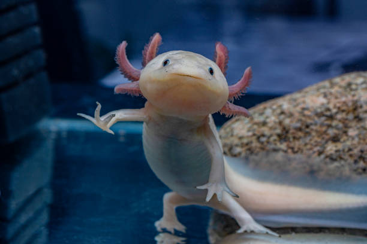
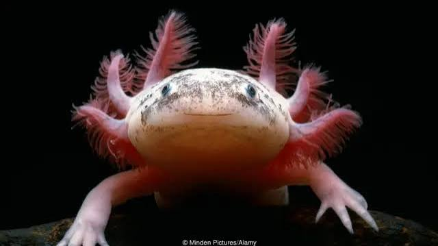

No México, país de origem, o axolote (Ambystoma mexicanum) é representado de forma multifacetada: um tesouro da biodiversidade, um ícone cultural profundamente enraizado e um símbolo de identidade nacional.

O axolote (Ambystoma mexicanum) é um anfíbio mexicano famoso por sua neotenia (permanecer na forma larval/jovem a vida toda) e capacidade de regenerar membros. Na cultura, ele é um ícone nacional ligado à mitologia asteca e um fenômeno global na cultura pop científica
Mitologia Asteca
O nome do axolote vem da língua náuatl e significa "monstro aquático" (atl = água; xolotl = monstro).
A lenda:
Segundo o mito, Xolotl era o deus asteca do fogo e do relâmpago. Para evitar ser sacrificado e assim acender o Sol e iniciar o movimento das estrelas, ele fugiu e usou seus poderes para se disfarçar assumindo a forma de vários elementos, transformando-se por fim na salamandra axolote.

Origem: Eles são endêmicos do sistema de lagos de Xochimilco e Chalco, na região sul da Cidade do México
O anfíbio é tão intrínseco à identidade mexicana que transcende a biologia
Considerado o "Peter Pan" do mundo animal por nunca passar pela metamorfose, estampa desde cédulas de 50 pesos mexicanos até murais urbanos e artesanatos